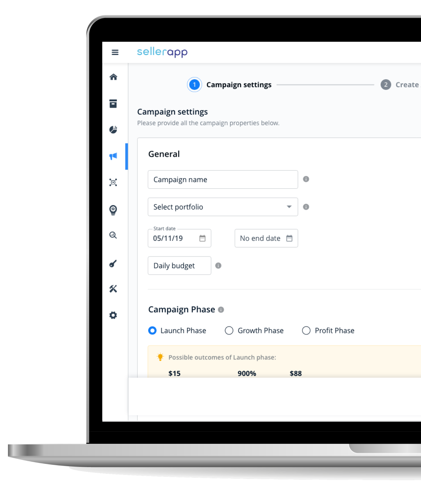
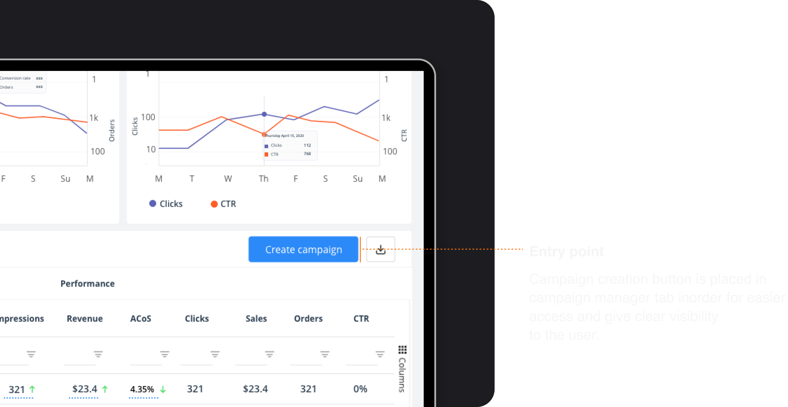
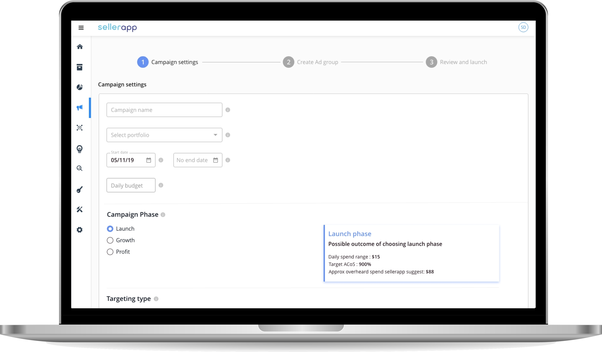
Context
What SellerApp does.
SellerApp helps Amazon sellers and retailers maximize marketplace performance with next-gen optimization models in a simple SaaS shell. Before this project, advertising campaigns were created and synced from outside the product: Seller Central, Excel, upload errors, and hours of waiting. The platform had intelligence; it didn't have the creation loop.
Creation lived outside the product.
Users couldn't create or manage campaigns inside SellerApp. Most churned to competitors that already owned the workflow.
Customer retention rate before the feature, below the bar for a premium intelligence platform.
Where campaigns were actually built. Tedious steps, Amazon-native complexity, no SellerApp context.
Manual data transfer and upload. Users reported multi-hour sync waits for newly created campaigns.
Teikametrics Flywheel and similar tools won on intuitive campaign breakdown, the benchmark users named unprompted.
Average session time on platform, not enough engagement depth to justify premium plans.
Sellers connected Amazon Seller Central externally just to manage ads SellerApp was supposed to own. The majority of complaints centred on missing campaign creation, not missing analytics. Business goals were explicit: move users to premium plans, raise engagement among power users, and cut churn.
User goals were simpler and louder: Create and manage campaigns inside SellerApp with one click, not a spreadsheet.
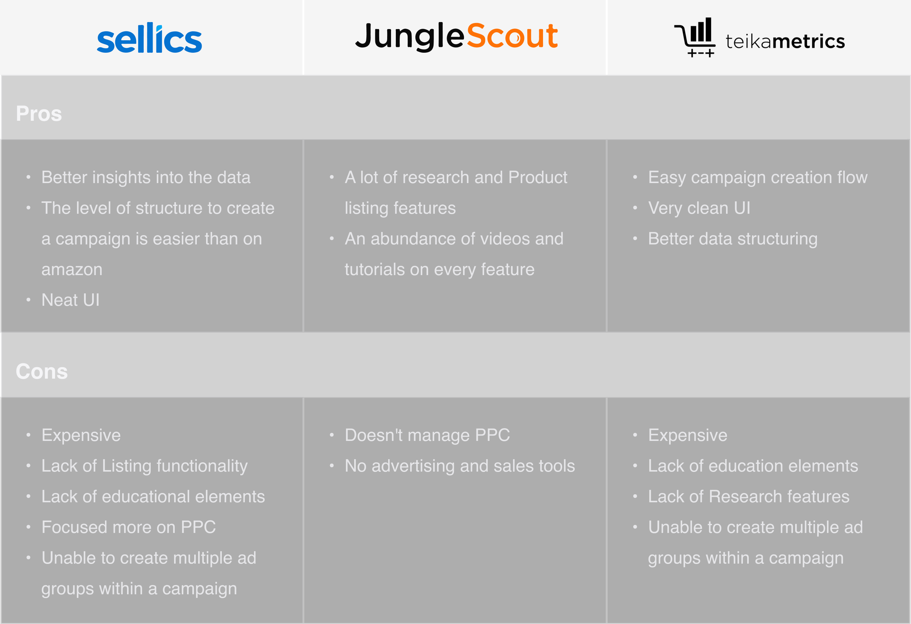
The CS team felt it first.
Short calls with sellers and the internal customer success team surfaced where creation pain actually lived, before wireframes.
I started with user interviews and customer success calls. The CS team manages sellers' Amazon accounts through SellerApp and lives inside campaign workflows daily, so their pain was sharper than many account holders'. They described sync lag, step overload, and Amazon's opaque targeting vocabulary as the real blockers.
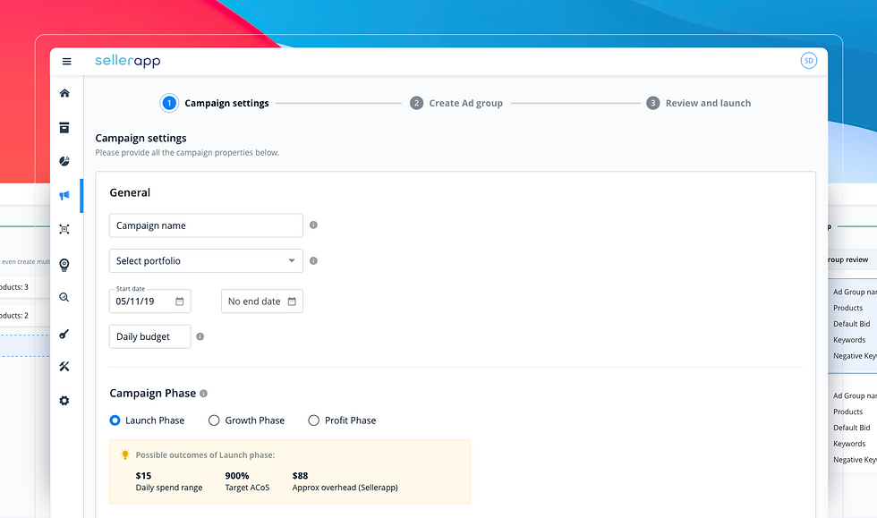
"Creating campaigns in Seller Central is tedious; syncing to SellerApp is worse. I wish this were one click." The sync step wasn't a footnote; it was the moment trust broke.
"I spent almost five hours waiting for newly created campaigns to sync." Time cost turned creation into a background job sellers stopped attempting.
"Multiple steps per campaign, and a different campaign for every ad group." Structure in Amazon's model collided with how sellers think about grouping products.
"Teikametrics broke campaign creation down more intuitively." The competitive reference wasn't abstract. Users named Flywheel by name.
Four pain points, one pattern.
Too many steps, wrong structure, too little guidance, messy bid and targeting fields.
Single-campaign creation felt endless: each ad group forced a separate campaign in the old flow.
Couldn't batch multiple ad groups under one campaign while creating, a SellerApp-exclusive gap we could close.
Amazon targeting and bid concepts surfaced without enough in-product education for growth-stage sellers.
Bid placement and targeting types lacked visual hierarchy: experts tolerated it; newcomers didn't.
Four constraints for every screen.
Exploration with stakeholders narrowed the architecture to four non-negotiables before high fidelity.
Fewer steps, beginner-friendly. Reduce time-to-first-campaign, not just field count.
Educational elements at decision points, especially bid placement and targeting type.
Multiple ad groups and bulk creation paths without restarting the wizard.
No sync wait, no spreadsheet detour. Creation and publish inside one technical path.
Brainstorming with stakeholders built the platform architecture and per-module task flows: whiteboard sessions, competitor walkthroughs, and flow diagrams before any pixel fidelity. Once direction held, I detailed each flow into low-fidelity wireframes for product, design, and engineering review.
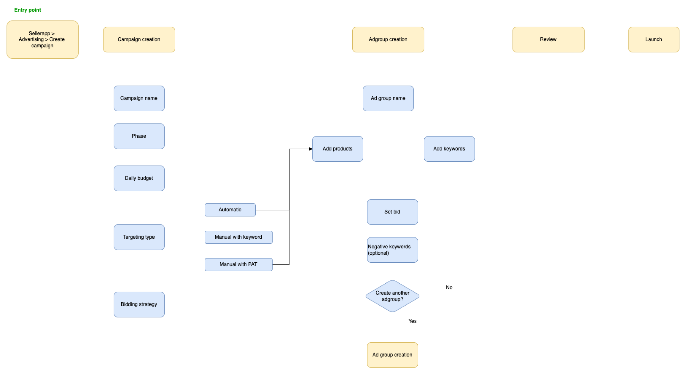
Wizard in, spreadsheet out.
No formal wizard component existed. I standardized the pattern for this flow and every future one.
Reduce steps to completion. Group related fields, cut redundant screens, and keep sellers oriented with a persistent progress model.
Multiple ad groups per campaign. SellerApp-exclusive: the feature customers and CS celebrated most post-launch.
Draft before launch. Save incomplete campaigns without forcing a sync or publish, which lowers the penalty for exploration.
Review screen. Summarize targeting, bids, and products before commit to catch errors when they're still cheap.
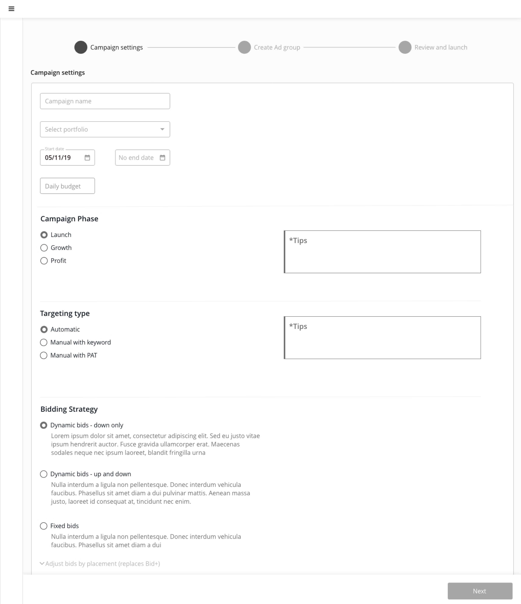
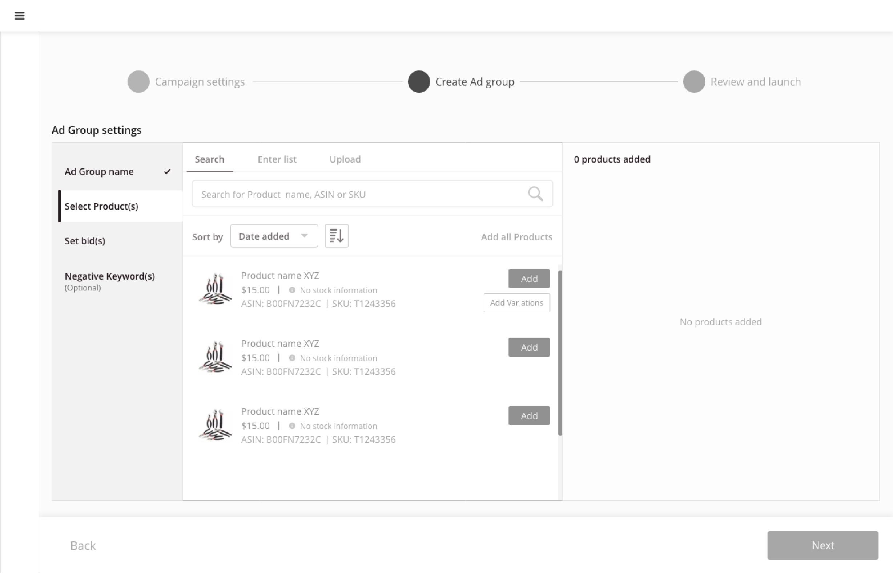
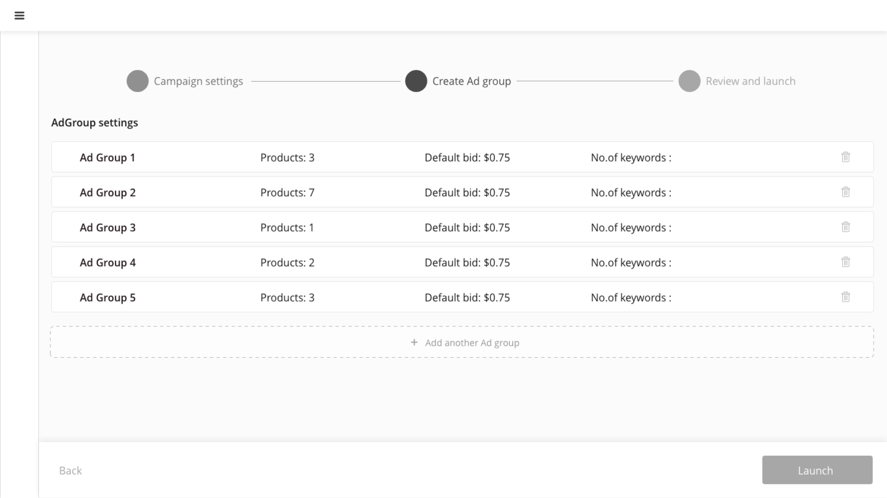
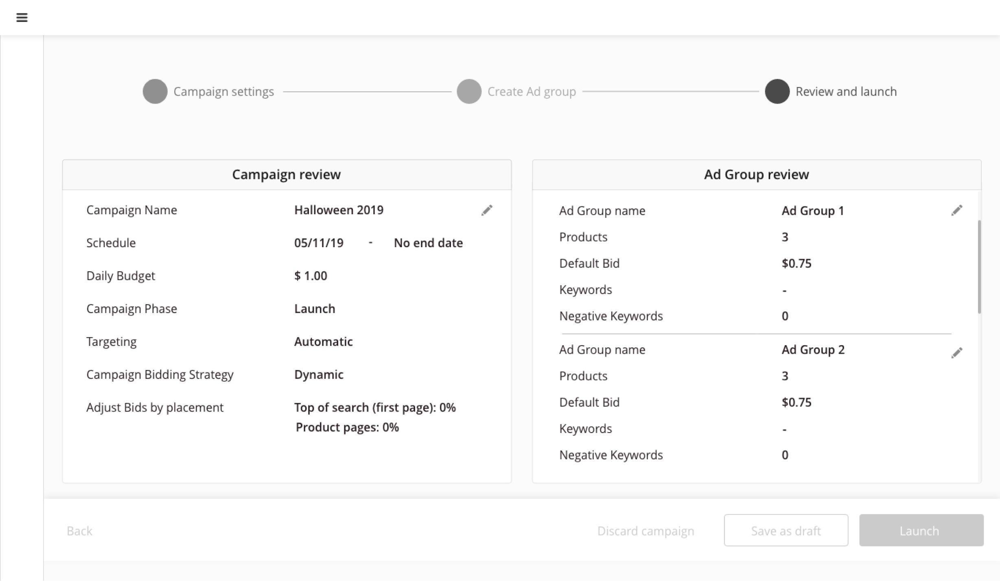
High-fidelity screens in wizard order: campaign shell, ad group setup, product and bid configuration, multi-group management, review, and entry from the manager home.
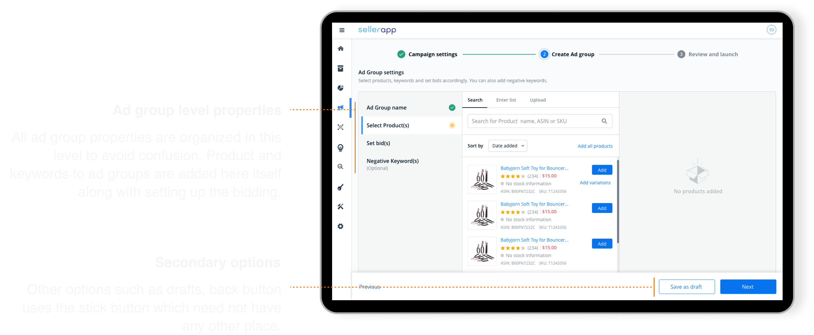
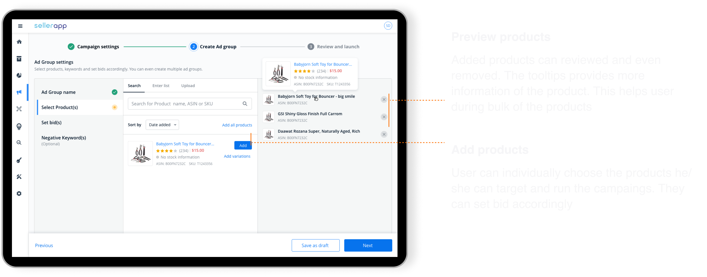
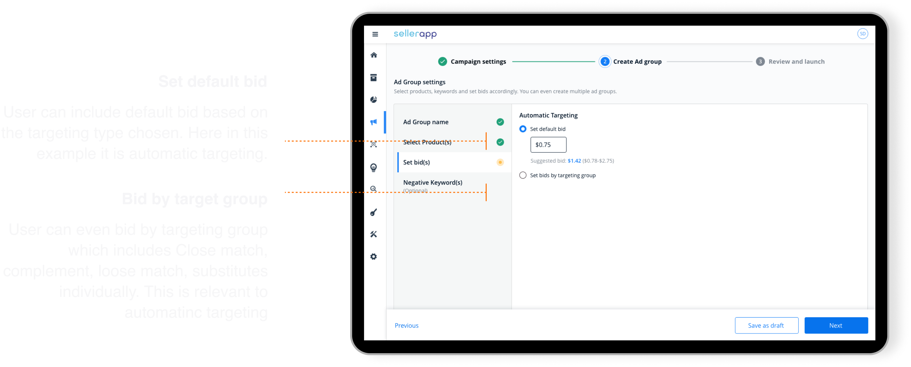
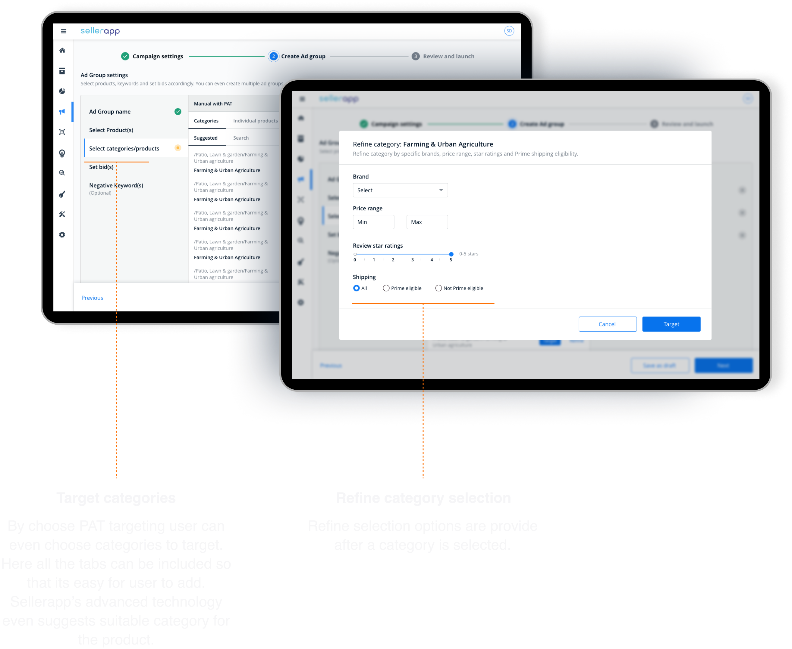
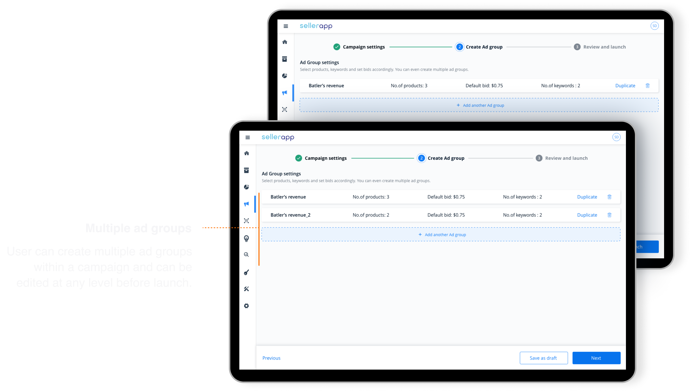
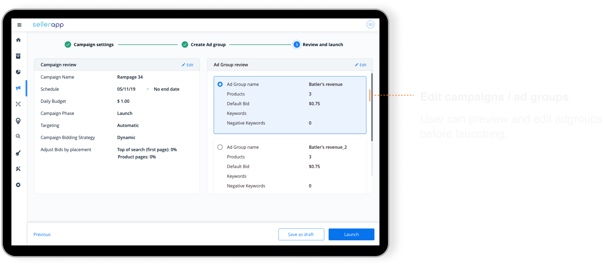
High-fidelity mockups were built in Adobe XD, then paired with front-end on every ticket. I ran UX review on implemented screens before release; spec gaps caught in review, not in customer support threads.
Two paths, one wizard.
First-time campaign vs power-user multi-group setup: same spine, different depth.
First campaign
Beginner- Open Campaign manager from the SellerApp home.
- Start Create campaign wizard.
- Set campaign name, budget, and schedule.
- Configure one ad group with guided targeting tips.
- Add products and set bids.
- Review summary and launch without opening Seller Central.
Multi ad group campaign
Power user- Enter wizard from Campaign manager.
- Define campaign-level settings once.
- Add first ad group: products, bids, categories.
- Add another ad group inside the same campaign.
- Repeat or save as draft.
- Review all groups on one screen before publish.
What made this hard.
Amazon's model is complex. SellerApp's surface area was not. Bridging that gap without a design system wizard was the real work.
No wizard component existed. Every step pattern (progress, validation, back navigation) had to become a reusable standard, not a one-off.
Amazon vocabulary vs seller mental models. Growth-stage sellers needed education without condescension: informative UI, not tooltip walls.
Scope pressure from out-of-MVP requests. Leadership and sales wanted more modules in v1. A strategic MVP cut kept ship date and quality intact.
Engineering alignment late costs double. Involving front-end during wireframes reduced rework, a takeaway I still enforce on platform work.
What changed after launch.
Customer and customer success feedback was strongly positive, especially multiple ad groups within a single campaign and the simpler step count. Sentiment moved, but so did the metrics leadership cared about: retention, engagement depth, and a credible path to premium plans.
What I'd still do today.
This was early 0→1 work as a solo designer on a revenue-critical feature. Three practices stuck.
Involve engineering upfront. Technical limits shape wizard architecture. Learning them in wireframes beats learning them in QA.
Ship an MVP with a name. A written scope boundary deflects out-of-scope requests that would derail timeline without killing ambition.
Design the reusable pattern, not just the screen. The wizard system outlived this module: the highest-leverage artifact wasn't a single happy path.
Campaign creation and management without export, upload, or sync wait.
Structural fix sellers named in research, not a cosmetic step reduction.
Creation gave power users a reason to stay inside the intelligence platform.
SellerApp taught me that B2B retention often breaks at the handoff when the "hard job" still lives in someone else's product. The design job was to close that handoff with a wizard honest enough for beginners and fast enough for CS teams running accounts all day.
Campaign creation was the first feature where I owned discovery through production as the only designer on a cross-functional squad. The pattern (research with internal operators, principled wizard architecture, MVP discipline) is the same spine I brought to Whatfix years later.
Artifacts shown are high-fidelity screens, wireframes, and flows from the SellerApp campaign creation program. Metrics cited are from post-launch reporting referenced in the original case study.
Diagnostics: building a troubleshooting tool when nobody agreed on what was actually broken
Surface missing flows and let authors debug visibility issues on their own.